Damage by ammo and quality
The first table lists each ammo type the weapon can load. Damage is one projectile at the base value (Special quality), Armour and Comp. multiply it when the projectile hits an armour plate or a component, and Falloff is how the damage drops over distance. The second table works out one whole shot (damage × pellets × the quality multiplier) for every quality, at close range and before the difficulty setting.
| Ammo | Damage | Pellets | Armour | Comp. | Falloff / range |
|---|---|---|---|---|---|
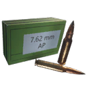 7.62mm Armor-Piercing Ammo | 33 | 1 | ×1.25 | ×0.75 | drops to 60% by ~550 m max 1,000 m |
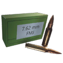 7.62mm Full Metal Jacket Ammo | 33 | 1 | ×1 | ×1 | drops to 60% by ~550 m max 1,000 m |
| Ammo | Q1 | Q2 | Q3 | Q4 | Q5 | Q5 vs armour | Q5 vs components |
|---|---|---|---|---|---|---|---|
| 7.62mm Armor-Piercing Ammo | 16.5 | 20.5 | 24.8 | 29 | 33 | 41.2 | 24.8 |
| 7.62mm Full Metal Jacket Ammo | 16.5 | 20.5 | 24.8 | 29 | 33 | 33 | 33 |
| Quality | Q1 | Q2 | Q3 | Q4 | Q5 | Q6 |
|---|---|---|---|---|---|---|
| Damage multiplier | ×0.5 | ×0.62 | ×0.75 | ×0.88 | ×1 | ×1 |
- A Dilapidated copy does 50% of the damage of a Special one (×0.5 against ×1), so upgrading quality is a straight damage increase.
- Against armour plates, 7.62mm Armor-Piercing Ammo is best (×1.25 damage to armour).
Experimental ammo of this calibre
The game files flag these rounds as experimental-only: they are for the experimental version. The column shows one shot at the experimental multiplier (×1).
| Ammo | Damage | Pellets | Armour | Comp. | Falloff / range | Effects |
|---|---|---|---|---|---|---|
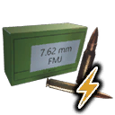 7.62mm Shock Ammo Exp. only | 33 | 1 | ×1 | ×1 | drops to 60% by ~550 m max 1,000 m | Special effect not included (it lives in a separate effect file). |
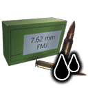 7.62mm Tar Ammo Exp. only | 33 | 1 | ×1 | ×1 | drops to 60% by ~550 m max 1,000 m | Special effect not included (it lives in a separate effect file). |
| Ammo | Q6 | Q6 vs armour | Q6 vs components |
|---|---|---|---|
| 7.62mm Shock Ammo Exp. only | 33 | 33 | 33 |
| 7.62mm Tar Ammo Exp. only | 33 | 33 | 33 |
Experimental versionExperimental Kvm 59 Machine Gun
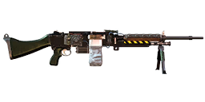
Experimental Kvm 59 Machine Gun is the Experimental version of this weapon. Its damage multiplier is ×1 (Special: ×1). See experimental weapons for the other experimental weapons.
The game files give the experimental version its own versions of 4 ammo types. These replace the normal values when fired from it. The damage column is one shot at the experimental multiplier (×1).
| Ammo (change from normal) | Damage | Pellets | Q6 | Armour | Comp. | Effects |
|---|---|---|---|---|---|---|
| 7.62mm Tar Ammo (Electric) same as normal | 33 | 1 | 33 | ×1 | ×1 | – |
| 7.62mm Armor-Piercing Ammo (Electric) range 1,000 → 1,000.1 | 33 | 1 | 33 | ×1.25 | ×0.75 | – |
| 7.62mm Shock Ammo (Electric) same as normal | 33 | 1 | 33 | ×1 | ×1 | – |
| 7.62mm Full Metal Jacket Ammo (Electric) same as normal | 33 | 1 | 33 | ×1 | ×1 | – |
Augments24 of 28 fit
Augments go into slots that depend on quality. Following the in-game rules: Worn and Good weapons take one Primary augment, Exceptional and Special take a Primary and a Support augment, and Dilapidated and experimental weapons take none. A ✓ means the augment fits this weapon at that quality, as the game's equipment compatibility table says.
Primary augments
| Augment | Q2 | Q3 | Q4 | Q5 | Restriction | |
|---|---|---|---|---|---|---|
 | Acidic | ✓ | ✓ | ✓ | ✓ | – |
| Adhesive Rounds | ✓ | ✓ | ✓ | ✓ | – | |
| EMP Detonation | ✓ | ✓ | ✓ | ✓ | – | |
| Health Stealing | ✓ | ✓ | ✓ | ✓ | – | |
| Machine Disarmer | ✓ | ✓ | ✓ | ✓ | – | |
| Prone Specialization | ✓ | ✓ | ✓ | ✓ | Melee weapons cannot use this augmentation. | |
| Rapid Reload | ✓ | ✓ | ✓ | ✓ | Melee weapons cannot use this augmentation. | |
| Scorching | ✓ | ✓ | ✓ | ✓ | Explosive weapons cannot use this augmentation. | |
| Sharpshooter | ✓ | ✓ | ✓ | ✓ | Melee weapons and explosive weapons cannot use this augmentation. | |
 | Small Fryer | ✓ | ✓ | ✓ | ✓ | – |
 | Structure Destructor | ✓ | ✓ | ✓ | ✓ | – |
 | Titan Toppler | ✓ | ✓ | ✓ | ✓ | – |
 | Unstoppable Shells | ✓ | ✓ | ✓ | ✓ | Melee weapons and explosive weapons cannot use this augmentation. |
 | Uranium Infused | ✓ | ✓ | ✓ | ✓ | – |
Don't fit: Final Round (Only handguns can use this augmentation.); Trick Shot Master (Only shotguns and melee weapons can use this augmentation.)
Support augments
| Augment | Q4 | Q5 | Restriction | |
|---|---|---|---|---|
| Crouching Tiger | ✓ | ✓ | Melee weapons cannot use this augmentation. | |
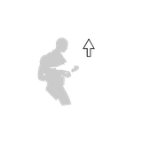 | Hip Shooter | ✓ | ✓ | Melee weapons cannot use this augmentation. |
| Hit and Run | ✓ | ✓ | – | |
 | Oversized Magazine | ✓ | ✓ | Melee weapons and explosive weapons cannot use this augmentation. |
| Quick Learner | ✓ | ✓ | – | |
| Scope Scout | ✓ | ✓ | Only weapons that can have a scope attached can use this augmentation. | |
| Skilled Spotter | ✓ | ✓ | – | |
| Slow and Steady | ✓ | ✓ | Melee weapons cannot use this augmentation. | |
| Sound Muffling | ✓ | ✓ | – | |
| Stabilization | ✓ | ✓ | Melee weapons cannot use this augmentation. |
Don't fit: Flurry of Blows (Only melee weapons can use this augmentation.); Power Attacker (Only melee weapons can use this augmentation.)
Skins3
Skins change only the look. All skins: weapon skins.
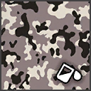
Flecktarn UrbanDLC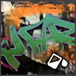
Street Art - Kvm 59Starts locked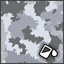
Woodland SnowDLCWhere to find it
The world files place 3 copies of the Kvm 59 Machine Gun at fixed spots (on top of the random weapon crates). Each spot has a fixed quality; this table counts them by region.
| Region | Dilapidated | Total |
|---|---|---|
| Farmlands | 2 | 2 |
| Himfjäll (Alpine Unrest) | 1 | 1 |
| Total | 3 | 3 |
The map opens on part of the 3 spots; zoom out (−) or drag to see the rest, open Detailed coordinates below, or open the full map.
Detailed coordinates3 spots
Every spot, with the nearest named map location and its distance. Coordinates are the game's world x / z; Map opens the interactive map on that spot.
| Quality | Region | Nearest location | Distance (m) | x | z | |
|---|---|---|---|---|---|---|
| Dilapidated | Farmlands | Villa Hammarnäs | 27 | -1,174 | -2,216 | Map |
| Dilapidated | Farmlands | Glättra | 220 | -493 | 1,273 | Map |
| Dilapidated | Himfjäll (Alpine Unrest) | Himarvet | 96 | 4,002 | -712 | Map |
Ammo and related weapons
Ammo it loads: 7.62mm Armor-Piercing Ammo, 7.62mm Full Metal Jacket Ammo.
Experimental-only rounds (for the experimental version): 7.62mm Shock Ammo, 7.62mm Tar Ammo.
Other weapons that load the same ammo: Automatgevär 4, AI-76 Assault Rifle, N144 Minigun, PM-71 Machine Gun, N60 Machine Gun, Vintovka 1891, Kotenok Sniper Rifle, S21.
Other machine guns: Kvm 89 Squad Automatic Weapon, N144 Minigun, PM-71 Machine Gun, N60 Machine Gun.